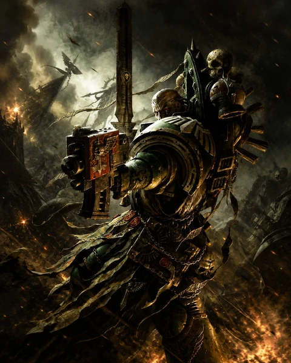

Dark Angels rules
Source-limited preview
Official Dark Angels Faction Pack content is frozen and verified. Three Codex Detachments remain source-limited because the complete frozen Codex source is not available in this repository. Dark Angels points use pinned secondary data and are not backed by a frozen official MFM snapshot.